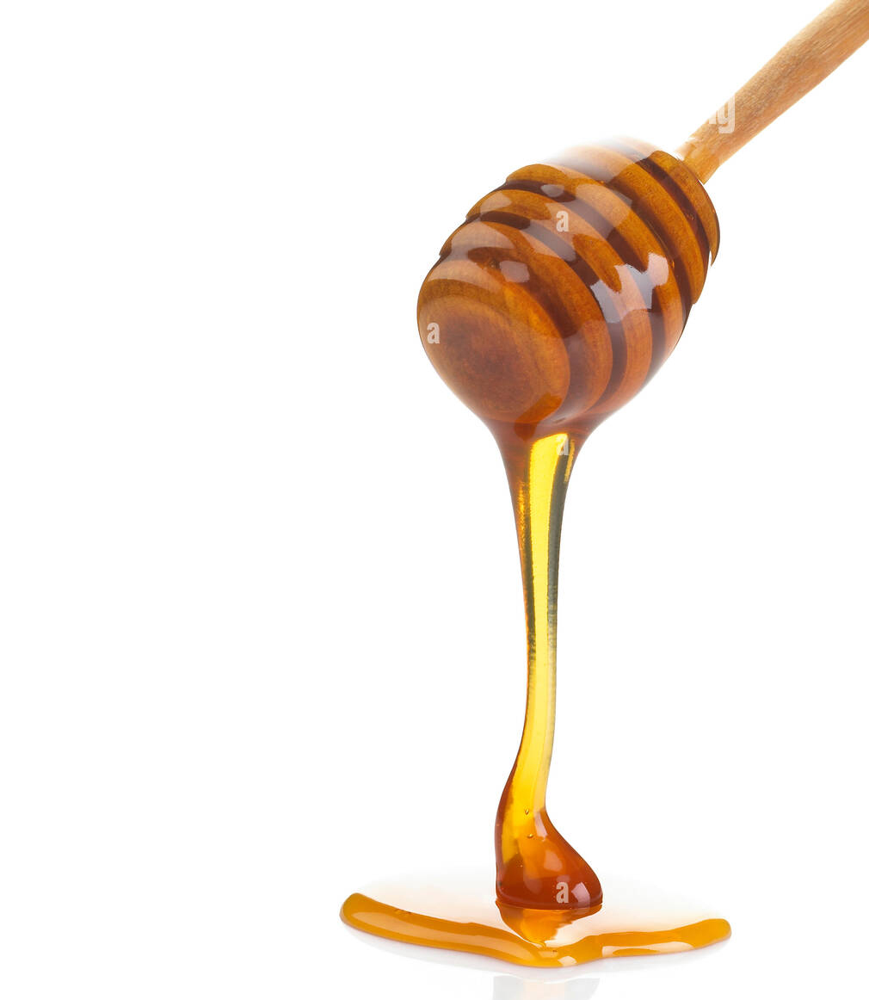
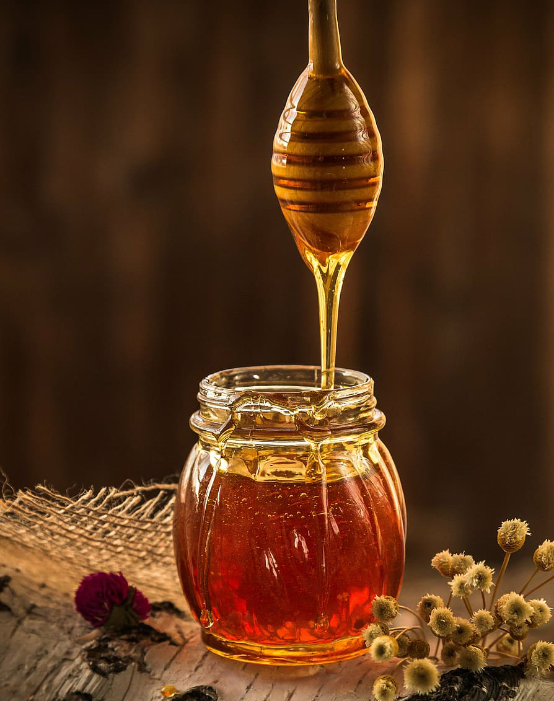

عسل الطبيعه
العسل
هو لعاب النحل يخرجها النحل من بطونها مما يجمعها من رحيق الازهار. و يعد العسل غذاء هاما لما يحويه من فيتامينات و احماض امينيه و معادن و سكريات اغلبها احادي
فوائد العسل
:من اهم فوائد العسل
مصدر للطاقة للكبار والصغار
يعتبر العسل مادة غذائية عالية القيمة ويستخدم كغذاء للأطفال والكبار
يقوم العسل بتعويض السكريات المستهلكة بسبب المجهود الجسمي أو الذهني الذي يقوم به الشخص، كما وقد يستخدم في علاج حالات نقصان الوزن والنحافه
مضاد للجراثيم و الميكروبات
العسل يشبه المضادات الحيوية حيث أن له القدرة على قتل العديد من الميكروبات، والفيروسات والفطريات، كما ويتفاعل مع خلايا في الجسم لإفراز مواد مطهرة تقلل من الالتهابات والتسممات


خفض مستوى الدهنيات في الجسم
يساهم العسل في الوقايه من العديد من: مشاكل السمنة، وأمراض القلب وتصلبات الشرايين، حيث وجد أن له دور في تقليل نسبة الكوليستيرول والدهنيات في الدم
الحفاظ على الأسنان وحماية اللثة
يلعب العسل دورًا أساسيًا في الحفاظ على الأسنان ووقايتها من التسوس ونموها السليم، كما أن له دور في تقوية اللثة وحمايتها
الوقاية من السرطانات
يحتوي العسل على الفيتامينات والمواد المضادة للأكسدة، وفي الواقع فإن واحدة من مضادات الأكسدة الفريدة من نوعها تسمى (Pinocembrin) وجدت فقط في العسل، ومن المعروف أن مضادات الأكسدة لها دور كبير في الوقاية من السرطان ومنع تكاثر الخلايا السرطانية، وخاصة في حالات سرطان المريء، والفم، والأمعاء والمعدة
جيد للجلد والبشرة والعيون
وجد أن للعسل فوائده تعود على الجلد والبشرة، حيث يساعد العسل على
تنقية البشرة ●
يستخدم لعلاج الأكزيما والصدفية ●
يستخدم لعلاج حب الشباب ●
له تاثير على الجهاز العصبي
يشكل العسل مسكن للجسم، فتناوله قبل النوم، يساهم في تهدئة الجهاز العصبي، وفي التغلب على بعض اضطرابات النوم مثل: الأرق